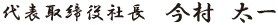

ごあいさつ

日頃より格別のお引き立てを頂き、誠にありがとうございます。
菱工産業株式会社は１９６０年に私の祖父である村田宗昵により設立、１９９８年から２３年間は、 長年祖父と共に会社を築き上げてきた中川英一が代表取締役として地域密着の堅実な企業へと育て上げ、
そして２０２１年４月２０日より私が三代目代表取締役に就任いたしました。
設立より６０余年、皆様から得た信頼と積み上げてきた実績は私たちの財産であり、 お客様、メーカー様、現場の音、におい、景色、その全てが菱工産業の宝です。
我々には永遠のテーマがあります。それは「お客様が仕入先を選ぶ要因は何か」ということです。 要因は様々ですが、重要なことは「一生懸命さ・ひたむきさ」だと思います。
実際に菱工産業の社員は、担当するお客様のこととなると目の色が変わります。
工事現場の調査では朝早くから日が暮れるまで納得できる方法を模索したり、時には現場で お客様の作業を手伝い汗にまみれたりすることもあります。
ひとり一人が「自分が現場の出発地点にいる」ということを肝に銘じているからこそ、 こうした行動が生まれるのだと思います。
私自身も祖父の代から受け継ぐ「夢／精神」を次世代へ繋いでいき、皆様のお役に立てる ように日々精進して参ります。
これからも想像以上の満足をお届けできるように、全社員一丸となって取り組んで参りますので 菱工産業をどうぞよろしくお願いいたします。
